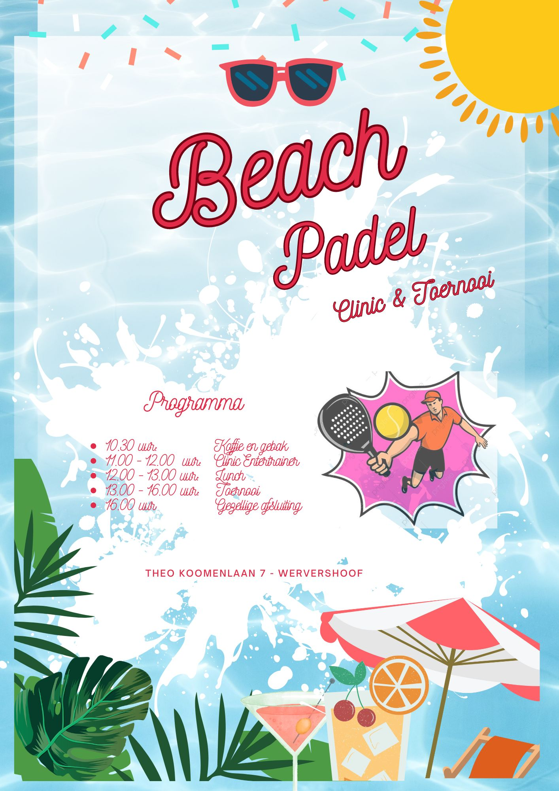

Recente Evenementen
Een van mijn recente evenementen is de 5e editie van de Westfriese Omnigames 2025. Klik op het logo hieronder om een uniek concept te bekijken via Tournify:

Organisator van sportevenementen & toernooien | Docent Lichamelijke Opvoeding
Ik ben Sander Lobbes en heb een passie voor sportevenementen organiseren. Als docent lichamelijke opvoeding wil ik mensen in beweging brengen. Ik ben in het verleden werkzaam geweest als scout voor de nationale KNVB o17 t/m o19 en jarenlang trainer geweest van toonaangevende amateurclubs zoals Hollandia. Vanaf heden hoop ik me te kunnen inzetten voor het organiseren van sportevenementen voor vrienden, collega's etc.
Een van mijn recente evenementen is de 5e editie van de Westfriese Omnigames 2025. Klik op het logo hieronder om een uniek concept te bekijken via Tournify:
Ook in 2023 organiseerde ik het Beach Padel toernooi, een dag waarbij deelnemers via de gemeenschapsveiling in Wervershoof getrakteerd werden op een clinic, culinaire versnaperingen en een heus beach tennis toernooi!

"In 2021 heeft Sander Lobbes De Omni Games bedacht. Uniek in zijn soort en passend bij de toekomstvisie van Stichting Beheer Sportpark De Westrand. Geef mensen de kans om samen met anderen zoveel mogelijk sporten te beoefenen, recreatief of prestatiegericht. De Omni Games worden beoefend door mix-teams met allemaal een andere sportachtergrond, die in meerdere disciplines het tegen elkaar opnemen. Een groot succes."
- G. vd Swaluw, Stichting Westrand
"In deze voorjaarsvakantie heeft Sander een alternatief toernooitje bedacht voor onze selectie o11/12. De jongens, die onder de vlag van een bekende club, streden fanatiek om de eerste plaats. Een sportief toernooi afgesloten met lekkere broodjes knakworst gemaakt in overleg met de vrijwillige ouders. Ook voor het kleine weet Sander iedereen te motiveren en te verbinden."
- medewerker Vvw"Voor onze gemeenschapsveiling zijn wij zoekende geweest om een beachpadel toernooi op te zetten. In samenwerking met Sander, die het gehele toernooi verzorgde, en Bart, die het culinaire gedeelte verzorgde wisten we een geslaagd beachpadel middag te verzorgen. Dit werd voorafgegaan met een clinic door Jorge Sanchez van Nh Beach Tennis. Een prachtige dag. Sander en Pierre een voorrecht om samen een groep blije mensen een mooie dag te verzorgen."
- B. Schuffel - medeorganisator.